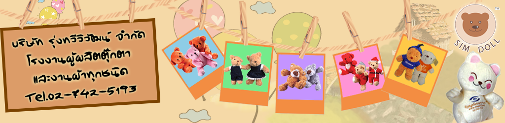

left
ชนิดของผ้าที่นำมาผลิตตุ๊กตามีกี่ชนิดและแตกต่างกันอย่างไร ?
ชนิดของผ้านั้นมีหลากหลายไม่ว่าจะเป็นผ้าขนสั้นหรือขนยาว เป็นผ้าที่ผลิตในประเทศหรือนำเข้าจากต่างประเทศ ซึ่งแต่ละชนิดก็จะมีราคาที่แตกต่างกันออกไป
10
right
ตุ๊กตาชนิดใดที่ได้รับความนิยมสูงสุด ?
ตุ๊กตาที่ได้รับความนิยมสูงสุดตลอดกาลคือ ตุ๊กตาหมี เพราะหมีดูเป็นสัตว์ที่อบอุ่น เหมาะสมกับทุกโอกาส และผู้รับทุกวัย
218
left
องค์ประกอบใดบ้างที่ทำให้ราคาของตุ๊กตาแต่ละแบบมีราคาแตกต่างกัน ?
ตุ๊กตาแต่ละแบบที่มีราคาแตกต่างกันจะขึ้นอยู่กับหลายองค์ประกอบ แต่มีองค์ประกอบหลักๆ คือ
- วัสดุที่นำมาผลิต เช่น ผ้า,ใย
- รูปแบบและความยากง่ายในการผลิต 426
- วัสดุที่นำมาผลิต เช่น ผ้า,ใย
- รูปแบบและความยากง่ายในการผลิต 426
left
จะทราบได้อย่างไรว่าตุ๊กตาแบบไหนควรใช้ผ้าชนิดใด ?
ด้วยความชำนาญของเรา เราสามารถแนะนำลูกค้าในการเลือกใช้ผ้าที่มีอยู่หลากหลายชนิด โดยคำนึงถึงความเหมาะสมกับแบบและภาพลักษณ์ที่ลูกค้าต้องการสื่อออกมา รวมไปถึงทีมดีไซน์ที่พร้อมจะออกแบบงานให้ออกมาดีที่สุด
634
right
เม็ดที่อยู่ในตุ๊กตาคือเม็ดอะไร ?
วัสดุกลมๆเล็กๆ นั้น คือเม็ดพลาสติก ที่ใส่ไว้เพื่อสร้างความรู้สึกในการบีบจับ ทั้งนี้เรายังคำนึงถึงความปลอดภัยของลูกค้า เราได้เลือกใช้เม็ดพลาสติกที่มีการลบคม ทำให้เวลาจับไม่เจ็บมือ
842
left
สิ่งที่ยัดในตัวตุ๊กตาคืออะไร ?
ในปัจจุบันมักจะใช้เส้นใยโพลีเอสเตอร์ ซึ่งแตกต่างจากอดีตที่ใช้นุ่น เนื่องจากเส้นใยโพลีเอสเตอร์ มีคุณสมบัติที่ไม่ค่อยดูดซึมน้ำ ทำให้สามารถนำไปซักและตากให้แห้งได้ง่าย มีโอกาสน้อยมากที่จะเกิดเชื้อรา
1050
right
ในการสั่งผลิตสินค้าในแต่ละครั้ง มีขั้นต่ำอยู่ที่จำนวนเท่าไหร่ ?
โดยปกติหากเป็นสินค้าที่มีแพทเทิร์นอยู่แล้ว จะมีขั้นต่ำอยู่ที่ 300 ชิ้น
แต่หากเป็นสินค้าตามแบบของลูกค้า จะมีขั้นต่ำอยู่ที่จำนวน 1,000 ชิ้น
*กรณีลูกค้าผลิตจำนวนน้อยกว่าขั้นต่ำ จะส่งผลทำให้ราคาสูงกว่าปกติ 1258
แต่หากเป็นสินค้าตามแบบของลูกค้า จะมีขั้นต่ำอยู่ที่จำนวน 1,000 ชิ้น
*กรณีลูกค้าผลิตจำนวนน้อยกว่าขั้นต่ำ จะส่งผลทำให้ราคาสูงกว่าปกติ 1258
right
การผลิตสินค้าตามจำนวนขั้นต่ำจะใช้เวลาในการผลิตเท่าไหร่ ?
โดยทั่วไปจะมีระยะเวลาการผลิตอยู่ที่ 30-45 วัน สำหรับสินค้าที่ผลิตด้วยวัตถุดิบที่หาซื้อได้ตามท้องตลาด
แต่หากเป็นวัตถุดิบที่ต้องสั่งผลิตหรือนำเข้า จะใช้ระยะเวลาผลิตประมาณ 60 วันขึ้นไป
ทั้งนี้หากลูกค้ามีระยะเวลาการใช้งานค่อนข้างน้อย สามารถปรึกษาทางฝ่ายขายของเราได้นะคะ 1466
แต่หากเป็นวัตถุดิบที่ต้องสั่งผลิตหรือนำเข้า จะใช้ระยะเวลาผลิตประมาณ 60 วันขึ้นไป
ทั้งนี้หากลูกค้ามีระยะเวลาการใช้งานค่อนข้างน้อย สามารถปรึกษาทางฝ่ายขายของเราได้นะคะ 1466